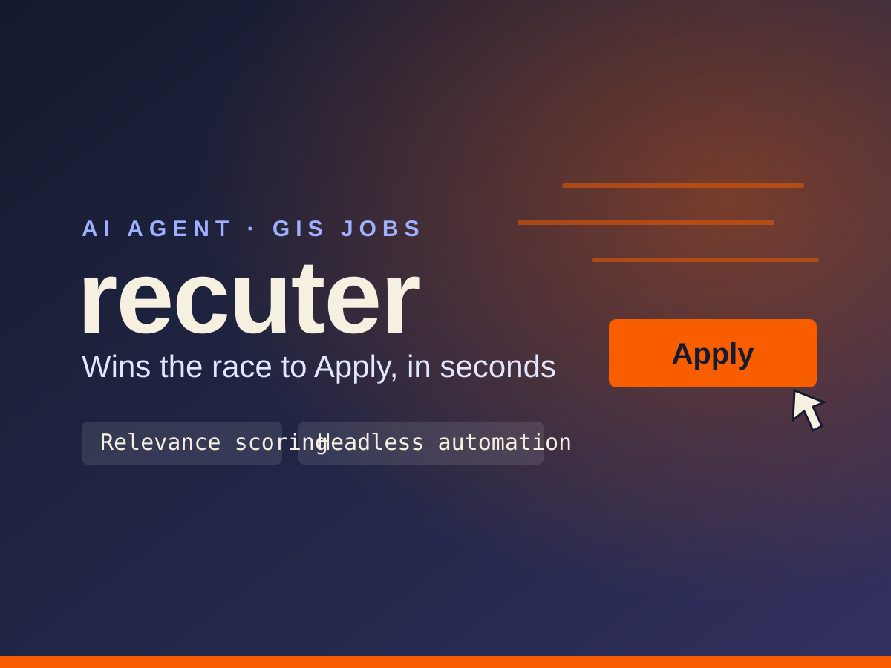

Recuter

Overview
Recuter targets a speed problem in hiring: a strong role can open at 9:02 and be capped at 150 applicants by 9:14, so a good fit loses simply by applying late — LinkedIn's applicant cap is 'functionally a sneaker drop.' The agent scores incoming postings against a candidate profile, auto-tailors resume bullets and cover letters to each description, and submits through headless browser automation across LinkedIn, Indeed, Greenhouse, and Workday-style portals, with human-in-the-loop review for edge cases like CAPTCHAs. A public job board surfaces a rolling shortlist of matched GIS roles tagged by pipeline status. The frontend is a static, dark-themed site (navy with mint-green accents) on Vercel and GitHub Pages; behind it sit a TypeScript agent and a Supabase backend with row-level security, where the browser only ever reads a curated 'board' view and Discord notifications are wired to GitHub activity. The initial market is entry- to mid-level GIS professionals, which ties the project back to my own field.
Stack
Features
- Relevance scoring of every new posting against a candidate profile
- Automated resume-bullet and cover-letter tailoring per job description
- First-in-line headless submission across LinkedIn, Indeed, Greenhouse, and Workday-style portals
- Human-in-the-loop review for CAPTCHAs and edge cases
- Public job board with a rolling shortlist of matched GIS roles tagged by pipeline status (new, recommended, interviewing, applied, offer, closed)
- Supabase backend with row-level security; the frontend reads only a curated 'board' view
- Discord notifications tied to GitHub activity
Key Technical Challenge
Reliable, low-latency form automation across very different application portals — with CAPTCHA handling and human review so every submission stays accurate — behind a Supabase schema whose row-level security exposes only a safe, curated board view to the public frontend.